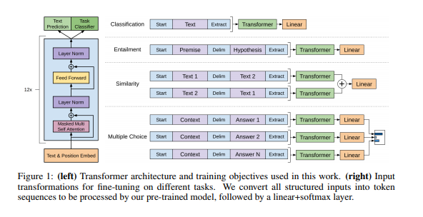

When I started studying Language Models, I remember when I’ve found the following image from Open AI transformer paper (Radford and Narasimhan 2018):

However, the only difference is that the input data should be slightly different:
For these tasks, we are given a context document \(z\), a question \(q\), and a set of possible answers \({a_k}\). We concatenate the document context and question with each possible answer, adding a delimiter token in between to get [\(z\); \(q\); $ $ $; \(a_k\)]. Each of these sequences are processed independently with our model and then normalized via a softmax layer to produce an output distribution over possible answers.
Therefore, these inputs could be optimized via Categorical Cross Entropy Loss, where \(C\) is the number of options available. For a specific question.
Bert Model with a multiple choice classification head on top (a linear layer on top of the pooled output and a softmax) e.g. for RocStories/SWAG tasks.
Downloading: 100%|██████████| 232k/232k [00:01<00:00, 171kB/s]
Downloading: 100%|██████████| 433/433 [00:00<00:00, 122kB/s]
Downloading: 100%|██████████| 440M/440M [02:06<00:00, 3.48MB/s]
Some weights of the model checkpoint at bert-base-uncased were not used when initializing BertForMultipleChoice: ['cls.predictions.bias', 'cls.predictions.transform.dense.weight', 'cls.predictions.transform.dense.bias', 'cls.predictions.decoder.weight', 'cls.seq_relationship.weight', 'cls.seq_relationship.bias', 'cls.predictions.transform.LayerNorm.weight', 'cls.predictions.transform.LayerNorm.bias']
- This IS expected if you are initializing BertForMultipleChoice from the checkpoint of a model trained on another task or with another architecture (e.g. initializing a BertForSequenceClassification model from a BertForPreTraining model).
- This IS NOT expected if you are initializing BertForMultipleChoice from the checkpoint of a model that you expect to be exactly identical (initializing a BertForSequenceClassification model from a BertForSequenceClassification model).
Some weights of BertForMultipleChoice were not initialized from the model checkpoint at bert-base-uncased and are newly initialized: ['classifier.weight', 'classifier.bias']
You should probably TRAIN this model on a down-stream task to be able to use it for predictions and inference.
question ="George wants to warm his hands quickly by rubbing them. Which skin surface will produce the most heat?"option_a ="dry palms"option_b ="wet palms"option_c ="palms covered with oil"option_d ="palms covered with lotion"
In this case, option A is the correct one. Furthermore, the batch size here would be 1
labels = torch.tensor(0).unsqueeze(0)
Notice that the question is the same for each option
Notice that if we have a dataset such as SquaD where each question comes with a context, we could append this context to either the question text or the option text and we would then have the tuple cited by Open AI transformer paper
The output is a linear layer which would still be trained through a Cross Entropy loss. Then, as stated by the documentation, we still need to apply softmax to the logits